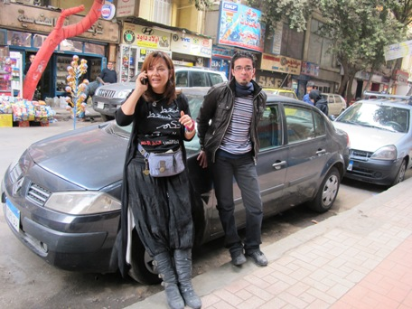

|
|

کاندیدای زن و بازی سیاسی در آستانه انتخابات ریاست جمهوری مصر
شعله ایرانی/ ترجمه : شهرزاد امین
يكشنبه7 اسفند 1390
تغییر برای برابری: پیشنهادی جدید با عنوان "رییس جمهور مورد توافق همه جناحها" از طرف اخوان المسلمین مصر موجب نگرانی و اعتراض نامزدهای مستقل انتخابات ریاست جمهوری شده است. بثينة كامل، تنها کاندیدای زن ریاست جمهوری، این پیشنهاد را بیشتر یک "مزاح بی مزه" نامید. او مدت هاست که فعالیت انتخاباتی اش را برای انتخاباتی که قرار است در ماه مه برگزار شود، آغاز کرده است.
بثينة كامل تنها زنی است که رسما نامزدی خویش را برای شرکت در انتخابات آینده ریاست جمهوری مصر، که قرار است در ماه مه امسال برگزار شود، اعلام کرده است. بثينة یکی از چهره های شناخته شده مصر و از مجریان معروف رادیو و تلویزیون و فعالین اجتماعی است. خانم کامل مدافع دمکراسی و جدایی دین از دولت، دولت غیرنظامی و حقوق برابر زنان است. او سال ها با فساد و رشوه خواری در مصر مبارزه کرده است و در کلام و عمل از عدالت اجتماعی و تحقق اهداف انقلاب مصر دفاع می کند. مسئول کمپین انتخاباتی کامل در نوامبر2011 به نشریه ی پرسپکتیو فمینیستی گفت که خانم کامل فعالیتهای انتخاباتی خویش را با مسافرت به سراسر کشور و دیدار با مردم آغاز کرده است.

 مردم شهرهای کوچک و روستاها از وی به گرمی استقبال می کنند. او بر خلاف دیگر کاندیداهای پست ریاست جمهوری بدون محافظ و با اتوموبیل ساده ی خود به شهر و روستا می رود و با مردم از نزدیک و بدون تشریفات در مورد دیدگاه های خود گفتگو می کند. کامل از هیچ نیرو و مرجعی کمک مالی دریافت نمی کند و با هزینه ی شخصی اش کارزار انتخاباتی اش را به پیش می برد.
مردم شهرهای کوچک و روستاها از وی به گرمی استقبال می کنند. او بر خلاف دیگر کاندیداهای پست ریاست جمهوری بدون محافظ و با اتوموبیل ساده ی خود به شهر و روستا می رود و با مردم از نزدیک و بدون تشریفات در مورد دیدگاه های خود گفتگو می کند. کامل از هیچ نیرو و مرجعی کمک مالی دریافت نمی کند و با هزینه ی شخصی اش کارزار انتخاباتی اش را به پیش می برد.
شرایط پذیرفته شدن کاندیداهای مستقل، حمایت حداقل سی تن از 678 نماینده مجلس یا سی هزار امضاء از واجدین حق رای از حداقل 15 شهر از 27 ایالت مصر لازم است.
کاندید مورد توافق جناح ها
این هفته بازی سیاسی جدید بلوک اسلام گرایان مصر، به رهبری اخوان المسلمین، کاندیداهای ریاست جمهوری مصر را خشمگین کرد. مدتی است در مطبوعات مصر صحبت از رای زنی پشت پرده در مورد پیشنهاد کاندید ریاست جمهوری مورد توافق جناحهای صاحب اکثریت در پارلمان است. بالاخره شایعات به حقیقت تبدیل شدند و طبق توضیح سخن گوی اخوان المسلمین پیشنهاد "رییس جمهور مورد توافق همه" اقدامی جهت اجتناب از به راه افتادن یک کمپین پر خرج انتخاباتی است. اخوان المسلمین با طرح این ایده که ابتدا به صورت شایعه به مطبوعات راه پیدا کرد قصد آزمایش افکار عمومی را دارد معتقد است که می بایست یک نامزد مشترک با "وزنه قابل توجه" در انتخابات معرفی شود چرا که فقط چنین کاندیدایی" قابلیت اداره کشور و تامین ثبات سیاسی" را دارد. این سخنان را محمود حسین، دبیر کل اخوان المسلمین به روزنامه مصر ایندپندنت و المصری الیوم اظهار کرد.
بثينة كامل کاندیدای زن در انتخابات در پیش رو، در یک مصاحبه تلویزیونی در مقابله با این پیشنهاد شدیدا با آن مخالفت کرد و آن را یک شوخی مسخره نامید و نسبت به بازگشت سیستم تک حزبی از نوع دوران مبارک، اینک تحت عنوانی دیگر، هشدار داد.
بر اساس گزارش روزنا مه بیکیا مصر، اخیرن محبوبیت بثينة كامل در بین مردم کوچه و بازار افزایش پیدا کرده است. علت این افزایش رد کاندیداتوری جهت کسب جایزه ی 2012 ”International Women of Courage Award” که یک جایزه آمریکایی برای زن شجاع سال می باشد، است. رییس کمپین کامل می گوید که علت مخالفت بثينة کامل و رد پیشنهاد کاندیدا شدن این است که این جایزه هر ساله از طرف دستگاه دولتی آمریکا اهدا می شود. کامل معتقد است که دولت آمریکا بطورغیرمستقیم ازنظامیان حمایت می کند و در کشتار انقلابیون مخالف حسنی مبارک مشارکت داشته است. او جایزه ایی که بوی خون جوانان مصری را می دهد نمی پذیرد.
بسیاری معتقدند که با توجه به اینکه کاندیداهای ریاست جمهوری مصر طی روزهای اخیر از جوانب گوناگون به کسب حمایت از دولت های خارجی متهم می شوند، رد جایزه ی دولتی آمریکا از جانب کامل تصمیمی عاقلانه بوده است.
بثينة کامل مرتبا در تظاهرات های میدان تحریر در کنار جوانان بر علیه دولت نظامی و رسیدن به خواسته های اولیه ی انقلاب شرکت می کند. او سالیان دراز از طریق تریبون هایی که در اختیار داشته با دولت مبارک مخالفت کرده است. اخیرا او در توتیتر خود نوشت که در نزدیکی های میدان تحریر از طرف چماقدارها مورد حمله قرار گرفت. بدلیل حضور خبرنگاران در صحنه، این حادثه به مطبوعات هم درز کرد. روزنامه بیکیا مصر گزارش داد که کامل و دختر جوانش در جریان تظاهرات اخیر علیه حکومت نظامیان که به خشونت کشیده شد، در اطراف میدان تحریر توسط پلیس دستگیر شدند. طبق گزارش این روزنامه، پلیس و سربازها مادر و دختر را مورد آزار و اهانت جنسی قرار دادند.
ائتلاف اسلامی ها برای تشکیل دولت
پس از چند هفته گمانه زنی مطبوعاتی و شایعه پراکنی در باب مذاکرات اسلامی ها و نظامیان در مورد یک "دولت اجماع ملی"، شاخه سیاسی اخوان المسلمین یعنی حزب عدالت و آزادی، بیانیه ای را در تاریخ 22 فوریه منتشر کرد . بر اساس این بیانیه به دلیل بی لیاقتی دولت فعلی در برقراری آرامش، باید دولتی که " آرای مردم را منعکس می کند" مسئولیت دولت آینده ی مصر را به عهده بگیرد. معنای این بیانیه این است که بلوک اسلامی متشکل از حزب عدالت و آزادی ، حزب نور سلفی ها و معتلفین آنها جماعت السلامیه با داشتن اکثریت مجلس بر اساس آرای مردم، می بایست بتوانند دولت جدید را تشکیل دهند. به تحقق پیوستن چنین برنامه ایی مسلما انتخابات ریاست جمهوری و قانون اساسی آینده مصر را تحت تاثیر قرار خواهد داد.
منبع: نشریه سوئدی پرسپکتیو فمینیستی
عکس از شعله ایرانی